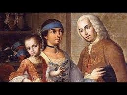
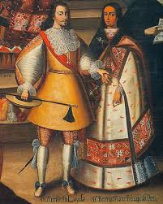
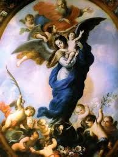
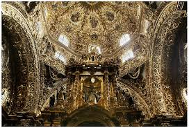

Cultura mestiza
Resultado de la fusión cultural entre los pueblos indígenas de México y los colonizadores europeos, principalmente españoles. Se manifiesta en la religión, gastronomía, idioma, tradiciones y arte. La cultura mestiza es la base de la identidad nacional mexicana.
Se refleja en la gastronomía, donde ingredientes nativos se mezclan con técnicas y productos europeos.
En el idioma, la cultura mestiza se refleja en la integración del español con vocablos indígenas.
En el arte y celebraciones, se combinan elementos europeos e indígenas.




La Virgen de Guadalupe es un ejemplo de sincretismo: representa a la Virgen María, figura católica, pero con rasgos indígenas y asociada con el cerro del Tepeyac, lugar sagrado prehispánico. Las fiestas patronales también combinan procesiones religiosas con danzas y música de origen indígena.
El maíz, chile y frijol (indígenas) se fusionaron con trigo, azúcar, lácteos y especias europeas. El mole poblano es ejemplo de esta mezcla: combina chiles nativos con ingredientes traídos por los colonizadores como la canela o el clavo. El pan de muerto une el pan de trigo europeo con la tradición indígena de honrar a los difuntos.
Aunque el español es la lengua predominante, conserva una gran influencia de lenguas originarias. Estas palabras enriquecen el idioma y transmiten la herencia cultural indígena en la vida cotidiana.
El Día de Muertos mezcla creencias prehispánicas sobre el ciclo de la vida con el calendario católico. Las danzas mestizas utilizan vestimentas y ritmos que provienen tanto de lo indígena como de lo español. La arquitectura colonial (iglesias, conventos) fue diseñada con estilo europeo pero construida y decorada con símbolos y técnicas indígenas.
Religión – Catolicismo con elementos indígenas (Virgen de Guadalupe, fiestas patronales).
Mole poblano, tamales con carnes introducidas por los españoles, pan de muerto.
Palabras de origen náhuatl en el español mexicano: chocolate, coyote, tomate.
Día de Muertos, danzas mestizas, arquitectura colonial con mano indígena.